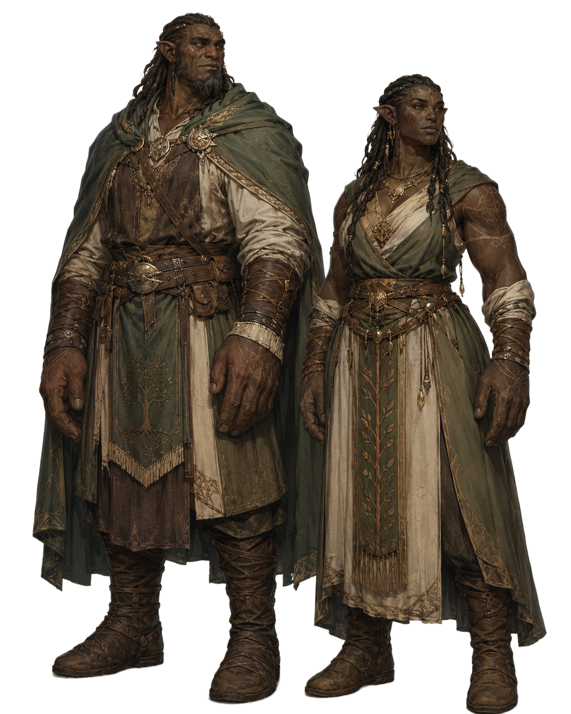

Races and Peoples
Races
Humans, elves, dwarves, orcs, beastfolk, oni, halflings, and the Laclot people—their cultures, physical traits, and homelands.
Race Archive Format
Each entry records origins, culture, language, lifespan, faith, and relationships with nations.
-

Human
The most populous race in the world. Those who live longest may reach around 120 years of age.
Humans rarely possess the singular natural gifts seen among some other races.
Instead, they adapt readily to their surroundings and display versatility in combat, magic, commerce, farming, crafts, and many other pursuits.
Their desire to accomplish much within a short life often makes longer-lived peoples regard them as impatient.
Their brief lifespan has earned them the name “short-lived race,” while their flexibility across environments and eras has led to “adaptive race.”
Yet this very pace has driven the growth of human nations and the building of countless cities and cultures.
Heroes, sages, merchants, thieves, rulers, and commoners alike are found among this remarkably diverse people.
View details -

Elf
A long-lived race with exceptional magical aptitude.
Many excel at magic and archery. Both men and women are generally tall and are known for their refined appearance.
The longest-lived may reach around 500 years, but low fertility keeps their population small.
They therefore value bonds of blood and community and approach the outside world with caution.
Many elves build settlements deep in forests and live behind barriers that separate them from the outside world.
Contact with other races is rare, and outsiders entering the forest without permission seldom reach an elven settlement.
Several related peoples also exist, including half-elves born with other races and dark elves whose skin was changed by dark magic or necromancy.
Their beauty and rarity sometimes make them targets for kidnappers and black-market traders, reinforcing their distrust of the outside world.
View details -

Dwarf
A long-lived race with deep knowledge of ores and metalworking.
They are short but sturdy, with even the tallest reaching only around 150 centimeters.
Many endure pain and alcohol exceptionally well. The longest-lived may reach around 300 years.
Most dwarves living across the world are said to trace their ancestry to the mining city of Kazandor.
Many excel at mining, smelting, and forging, and their weapons and armor are highly valued by knights and adventurers.
In battle, their powerful builds and endurance make them effective shield bearers and front-line fighters.
A heavily armored dwarf holding the line against enemy attacks is an enduring image of the dwarven warrior.
Where elves live in harmony with forests, dwarves cut into mountains, mine ore, tend furnaces, and create metalwork and machinery.
These differing values are often said to cause friction between dwarves and elves.
Even so, not all are hostile, and some openly respect one another's skill and knowledge.
View details -

Orc
A muscular, powerfully built race with large tusks rising from the lower jaw. The longest-lived may reach around 200 years.
Many work as lumberjacks and woodworkers and possess excellent building skills. Their sturdy wooden structures and bridges are valued by many nations.
Despite their imposing appearance, many are gentle and loyal and form friendly relationships with other races.
They do not naturally seek conflict, but readily bring their strength to bear when protecting family or companions.
Some become adventurers, though they are not numerous, and their sturdy bodies often place them on the front line.
View details -

Beastfolk
A collective name for many peoples bearing animal traits, including catfolk, wolffolk, and tigerfolk. Their abilities and specialties vary greatly.
Catfolk excel in agility and stealth, while wolffolk are skilled at group coordination, tracking, and scouting; each people has distinct strengths.
Lifespans differ, though many live about as long as humans or somewhat less.
Many are friendly and loyal, and beastfolk adventurers, mercenaries, and merchants are found throughout the world.
Some misuse their physical gifts as thieves or criminals, however, causing suspicion toward them in certain regions.
View details -

Oni
A minority people distinguished by the horns on their foreheads.
They possess powerful bodies and exceptional physical ability, giving them formidable combat prowess.
They live somewhat longer than humans, with the oldest reaching around 150 years.
Many earn their living as mercenaries or adventurers, though the dangers of that life mean relatively few reach old age.
Oni are naturally built for combat and tend to maintain a well-conditioned physique through ordinary daily life.
Oni women in particular may therefore draw admiration from women of other races.
They possess a strong instinct to preserve their people, and both men and women tend to have a powerful drive to leave descendants.
Many actively pursue romance and marriage, and children born with other races are not uncommon.
View details -

Halfling
A people smaller than humans, averaging around 120 centimeters in height, yet noted for dexterity and patience. Some live as long as 150 years.
They excel at farming, animal husbandry, and cooking, and many enjoy peaceful lives in lands rich with nature.
Their knowledge and experience are extensive, and they often teach agricultural and pastoral techniques to other peoples.
Many are cheerful and sociable and love festivals and feasts above all else.
At celebrations they link arms across racial boundaries, filling the gathering with song and dance—a familiar halfling custom.
Though peaceful and averse to conflict, they courageously defend cherished family and friends. Their sincere warmth earns affection from many peoples.
View details -

Laclot
A humanoid people combining large physiques with profound intellect. The longest-lived may reach around 250 years.
They founded the independent city of Rezul, renowned as a leading center of scholarship, and regard preserving knowledge for the future as their people's mission.
They master many fields, including history and magical studies, and conduct research alongside scholars arriving from across the world.
Despite their powerful builds and strength, they also perform delicate work such as manuscript copying and document restoration to a high standard.
Their impartial commitment to sharing knowledge has earned them respect as “guardians of knowledge” and “the people of wisdom.”
View details